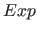

Next: Example Up: Defining Functions Previous: Defining Functions Contents
fib(0)=F => F=1.
fib(1)=F => F=1.
fib(N)=F,N>1 => F=fib(N-1)+fib(N-2).
qsort([])=L => L=[].
qsort([H|T])=L => L = qsort([E : E in T, E=<H])++[H]++
qsort([E : E in T, E>H]).
A function call never fails and never succeeds more than once. For function calls such as fib(-1) or fib(X), Picat raises an exception.
Picat allows inclusion of function facts in the form  (
( ,
, ,
, )
)= in function definitions.